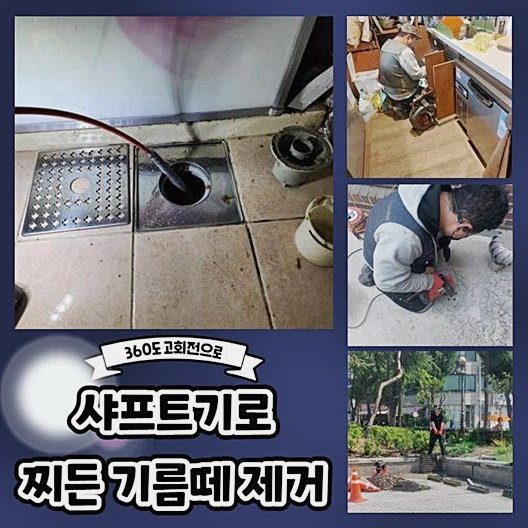
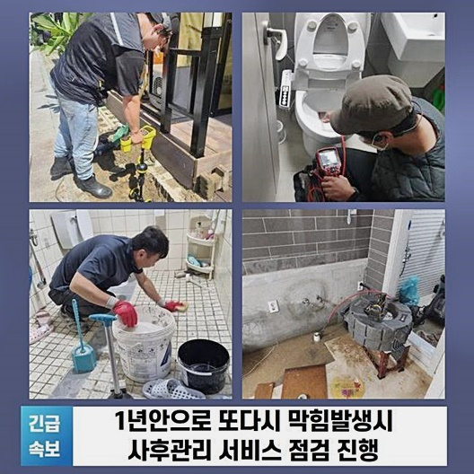
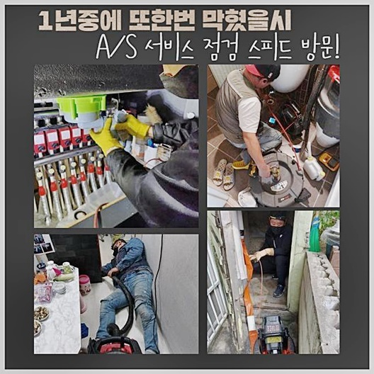
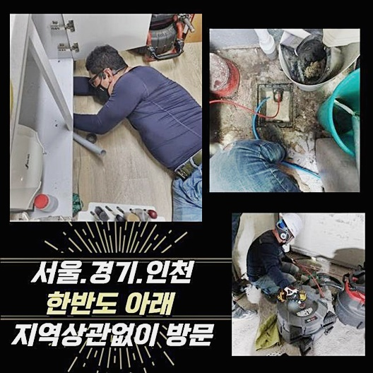
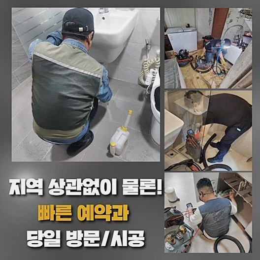
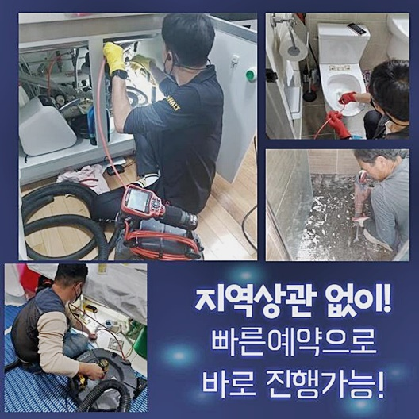

🏠 강서구 염창동화장실하수구뚫음 우장산동 고압세척비용 설비
용인 하수구막힘 전문 시공 후기

📋 작업 개요
- 위치: 용인
- 서비스 유형: 하수구막힘, 배관막힘, 뚫는업체, 고압세척, 설비공사, 악취차단
- 작업 일시: 2024. 9. 14. 19:10
- 업체명: 하수구수사대 (010-5615-2118)
🔍 문제 상황
강서구 염창동화장실하수구뚫음 우장산동 고압세척비용 설비
많은 사람들이 내부에서 생활하는 형태라면 대수롭지않은 사건만으로도 하수의 흐름이 끊어집니다
이번에 이야기해볼 현장은 다수가 사는 빌라였어요 빌라의 1층에서 하수구의 고장이 생겨서 정상적인 생활이 힘드셨던 사태를 맞이하셨습니다
하수가 정상 배출되지 않고 거꾸로 치솟기까지 한다면 가장 아래의 층수에서 문제가 터질 수 있어요
하수구가 여러 차례 망가지는 설치되어있는 배관이 애초에 갖고 있던 형상으로 인한 결과인데요
생활하수를 폐기하는 공정을 문제 없이 이어지게 해주려면 모든 세대 배관들과 중앙 배관이 하나의 수로를 나눠 쓰게 됩니다
건물 파이프라인은 보편적으로 모두 연계되어 있으므로 한 곳에서 이물질이 차서 차단이 되어버리거나 오류가 빚어졌을 경우에는 특정 가정에만 오류가 보이는 것이 아니라 빌딩의 여러 층수에서 빠짐 없이 한꺼번에 사안을 맞이할 수 있어요
거꾸로 범람하는 현상 외에도 까다로운 일들을 만들어내는 파이프의 상황으로 인해 아래의 층수에서 손해를 극심하게 크게 입고 힘들어하셨네요
하수구의 이상을 감지하신 관리 책임자가 빌딩의 파이프가 중단된 사태라고 얼른 와달라 서비스를 의뢰하셨습니다!
물의 배출이 원만하게 진행되지 못했기에 많은 가구원에게도 이로 인한 문제가 전달되고 있는 상태라고 보였습니다
방문 전 상담 중에 습득한 내용을 되새김하면서 대략적으로 짐작을 해보았고 도구나 기기를 빠짐없이 챙기고 설비를 봐드리려 향했습니다

🔎 원인 분석
💡 전문가 진단: 정밀 진단 장비를 사용하여 슬러지의 고착 여부를 판명하고 타격/세척 작업을 실시했습니다.
하수관이 비정상적으로 작동하는 사건은 모든 곳에서 생겨나며 공들여 설비를 쓴다 해도 나타날 수 있는 사고입니다
설비가 새것이라 할지라도 하수구를 깨끗하게 쓰는 법에 민감하게 반응하여 문제의 초기 국면에 접어 들 때 얼른 수습할 수 있는 정보력을 갖추는 것이 바람직할 것입니다
여러 하수배관을 다뤄오면서 비상사태거나 고난이도 현장이라도 즉각 상황을 탐지해서 손을 봐드리고 있으니 언제라도 접수를 하시면 되겠습니다
주소지에 도착하면 첫 과정으로 문제의 본질이 무엇인지 세부적으로 들여다 봅니다
사안에 대해 대략적으로 들었지만 전문적 견해로 보자면 오류라고 보이는 측면은 다르게 읽힐 수 있기에 진단은 필히 수반되어야 합니다
즉시 돌입하는 것보다 명확한 원인을 알아내야만 작업 자체의 퀄리티도 증폭될 수 있어요
다량의 물이 넘쳐있는 작업지를 바라보면서 단번에 하수구 관련 이슈를 속전속결로 처리할 수 있는 해결책을 물색해 봐요
중심축인 메인 배관을 확인하면서 문제를 낳은 동기를 분석했습니다
각 세대에서 한곳으로 모인 물이 시원스럽게 내려가지 못하게 한 대상물은 바로 기름 슬러지 찌꺼기 뭉치가 배관을 채워 서서 물을 저지하고 있었던 거죠
원활하지 않은 도중에 물을 약간만 내려 보내더라도 관로 내부에 계속 누적되면서 문제가 생긴 메인관의 가장 근처에 있는 건물의 가장 하단부에서 울컥거리며 치솟는 일들이 첫 주자로 생긴 겁니다
숙련공으로 활동하면서 다양한 사례들을 체험하고 차분하게 처리해온 일들이 많이 누적되었으니 다분히 농축된 노하우로 문제를 만든 원인과 제일 효과적일 수단을 발견해 내게 됩니다
건물에 설치된 하수로로 물을 내려보내면서 음식물과 같은 이물질들이 혼재되는데요

🔧 작업 과정
제대로 처리되지 못하고 쌓여가면서 하수구를 망가뜨렸다고 유추할 수 있었습니다
막힌 통로를 뚫어내는 일로써 문제를 촉발한 씨앗을 소거시키는 것이 시급하다고 사료되었습니다
뭐 때문에 빚어진 일인지 정확히 판단 내리는 단계가 최우선적인 과제이므로 저희의 배관 카메라를 배치시켜서 내부 탐사 과정을 진행시켜 나갔습니다
이런 카메라는 보편적으로 신체를 들여다보기 위해 고안된 도구로 생각하시는 경우가 많은데 설비의 속을 탐색할 수 있게끔 개발된 기계입니다
하수구는 입구는 좁고 몸체가 길기에 사람의 눈 만으로는 심층부의 상황까지는 알아차리기가 까다로운 구조를 갖고 있기에 이런 환경의 깊이까지도 도달이 되는 자구책을 써야 합니다
설비에 맞춰서 나온 기기의 유용성은 약화됐을지 모를 하수구의 작은 흠집도 내지 않고 안정성있게 처한 문제를 극복하도록 지원하기 때문입니다
상황 판별없이 무작정 실시하는 장치의 활용은 하수구에 크고 작은 스크래치를 주다가 하수구 교환이라는 오래 소요되는 공사를 부릅니다
오염원을 구성하는 물질들과 외형과 규모를 모두 관측과정에서 수렴했다면 향후 계획을 세우는 부분에 큰 보탬이 됩니다
하수구를 누군가에게 맡길 때는 오랜 업력으로 빚어진 노하우를 소유하는지와 자세하게 수행할 때 필요한 장치 보유 여부를 차근차근 비교해 보시고 신중하게 판단하시길 바랍니다
주거지들은 배관들이 동일하게 만들어 지지 않았고 장소마다 다르고 어려운 경우도 많아요
그렇기 때문에 내부를 샅샅이 들여다보는 일을 들어갈 때는 많은 곳들을 점검해주고 유독 한 지점에 문제가 보인다고 해도 가볍게 중단하는 게 아니라 연계된 모든 파이프들을 지속적으로 관찰해야 합니다
문제되는 위치들을 알아냈다면 그 범위 속에 무슨 툴을 활용하여 해당 부위를 세정할 것인지 판단을 내려야 하겠죠
뚫음 업무를 하기 위해 투입되는 기계는 종류가 많지만 적절한 방책을 결정해야만 안에 고인 답답한 상태를 제거할 수 있죠
조사를 기반으로 문제가 가장 부각되는 위치의 이물질을 덜어내주기 위해서 배관 고압세척 경로를 점차 회복시켜 나갔습니다
노폐물이 켜켜이 쌓인 지점이 감지되면 능률이 제대로인 샤프트를 넣어서 부드럽게 잘라내 줍니다
이 기계장치는 내측에 돌처럼 단단하게 말라붙은 덩어리를 자잘하게 썰어주고 갈고리로 말아 올려주는 등 세척에 도움을 줍니다
모든 오염물을 제거하고 고압세척 단계를 거쳐 하수구의 이곳저곳을 클리닝을 이어갑니다
제대로 걷어내 주어야 추후 하수관에 또 다른 덩어리가 생성되지 않는 철저한 정화를 이뤄낼 수 있어요


✅ 작업 완료
흡수력이 좋은 석션기로 죽처럼 갈린 오물들을 한 조각이라도 빠지지 않도록 외부로 유출시켰습니다
만에 하나 남은 조각으로 인해 재차 막힘이 도래한다면 결코 일어나서는 결코 일어나서는 허용될 수 없는 문제이므로 중간 점검을 위한 카메라를 주입해서 남아있는 분량이 없도록 매의 눈으로 살폈어요
메인관로는 작은 배관들의 찌꺼기가 모여드는 파트인 만큼 사건이 터지기 전에 예방해야 합니다
내부 진단을 주기적으로 해주고 배관을 깨끗이 유지한다면 세대들이 피해를 보지 않고 시설물을 쓰실 수 있습니다
하수구가 마비되는 일로 인해 곤란한 국면을 맞이하셨다면 언제라도 개의치 않으니 의뢰를 맡겨주시면 감사하겠습니다




⚠️ 하수구 배관 막힘 예방 및 관리 가이드
- ✅ 머리카락, 비닐, 물티슈 등 물에 분해되지 않는 이물질은 하수구 유입을 절대 금지해 주세요.
- ✅ 하수구 거름망을 씌우고 모여진 이물질은 주기적으로 쓰레기통에 바로 비워주셔야 합니다.
- ✅ 배관 노후가 심할 경우 이물질이 더 쉽게 걸리므로 주기적인 배관 세척(고압세척 등)을 권장합니다.
- ✅ 작업 후 1년 이내 재발 시 하수구수사대에서 무상 A/S 보증 서비스를 제공합니다.
💡 핵심 정리
- 확실한 장비 작업(내시경 점검 및 샤프트 스케일링)으로 원인을 뿌리 뽑습니다.
- 작업 후 1년 이내에 동일한 부위 재발 시 100% 무상 A/S 서비스를 보장합니다.
- 서울 · 경기 · 인천 전 지역에 24시간 언제든 긴급 출동할 수 있도록 항시 대기 중입니다.
❓ 자주 묻는 질문 (FAQ)
🚨 용인 하수구막힘 문제로 고민이신가요?
정확한 원인 진단과 확실한 시공으로 재발 없는 해결을 약속드립니다.
24시간 긴급 출동 | 서울 · 경기 · 인천 전지역 | 1년 내 재발 시 무상 A/S